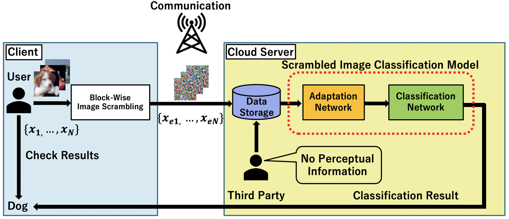
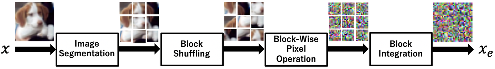
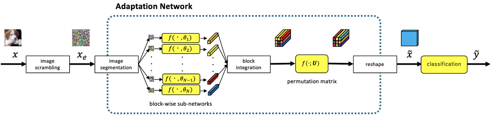

Block-wise Scrambled Image Recognition Using Adaptation Network
AAAI-20 Workshop on Artificial Intelligence of Things (AIoT), 2020 · arXiv:2001.07761

Abstract
In this study, a perceptually hidden object-recognition method is investigated to generate secure images recognizable by humans but not machines. Hence, both the perceptual information hiding and the corresponding object recognition methods should be developed. Block-wise image scrambling is introduced to hide perceptual information from a third party. In addition, an adaptation network is proposed to recognize those scrambled images. Experimental comparisons conducted using CIFAR datasets demonstrated that the proposed adaptation network performed well in incorporating simple perceptual information hiding into DNN-based image classification.
What the paper proposes
- Extended learnable encryption (ELE). The image is split into B×B blocks (4×4 for a 32×32 CIFAR image, i.e. 64 blocks), the block positions are shuffled, and the pixels inside every block are shuffled and intensity-inverted with a different key for every block. Its key space, (96!·296)64·64!, is far larger than that of LE (96!·296, one key shared by all blocks) and EtC (864·264·664·64!).
- Adaptation network for block-wise scrambled images. Block-wise sub-networks with separate weights per block, a learnable pseudo-permutation matrix U that learns to undo block shuffling (kept sparse with an L1−2 penalty), and a pixel-shuffle layer that re-assembles the feature map for a ShakeDrop classifier. The loss is L = LCE + λULU + λsLs with a spatial-smoothness penalty Ls, λU = 0.001 and λs = 0.1.


Main result
Top-1 accuracy on the CIFAR test sets. No AdaptNet feeds the scrambled image directly to the classifier; LE-AdaptNet is the adaptation network of Tanaka (2018), which shares one sub-network across blocks; ELE-AdaptNet is the proposed network. ELE-AdaptNet is the only system that recognises ELE-scrambled images reliably, and it is also the best on EtC.
| Dataset | Adaptation network | Plain image | LE | EtC | ELE (proposed) |
|---|---|---|---|---|---|
| CIFAR-10 | No AdaptNet | 96.70 | 94.94 | 85.94 | 67.10 |
| LE-AdaptNet | 95.64 | 94.49 | 80.16 | 48.39 | |
| ELE-AdaptNet (proposed) | 85.32 | 87.28 | 89.09 | 83.06 | |
| CIFAR-100 | No AdaptNet | 83.59 | 78.25 | 61.90 | 43.05 |
| LE-AdaptNet | 79.13 | 75.48 | 44.83 | 7.19 | |
| ELE-AdaptNet (proposed) | 60.36 | 71.30 | 71.91 | 62.97 |
Accuracy in %, values from Table 3 of the paper (ShakeDrop classifier; SGD with Nesterov momentum 0.9, batch 128, 300 epochs, learning rate 0.1 → 0.01 → 0.001 at epochs 150 and 225).
Use it
The scrambling schemes and the adaptation networks are a pip-installable package in the paper repository, which also reproduces Table 3 with one command per cell.
pip install git+https://github.com/MADONOKOUKI/Block-wise-Scrambled-Image-Recognition
import torch import blockscramble as bs ele = bs.ELE() # the paper's block-wise scrambling with the paper's keys x = torch.rand(8, 3, 32, 32) # images in [0, 1]; PIL images and numpy arrays work too x_scr = ele(x) # ele.inverse(x_scr) decrypts it (8-bit exact) model = bs.build_model(adaptation="proposed", num_classes=10) # ELE-AdaptNet + Shake-PyramidNet-110 logits, feature = model(x_scr, return_feature=True)
git clone --depth 1 https://github.com/MADONOKOUKI/Block-wise-Scrambled-Image-Recognition cd Block-wise-Scrambled-Image-Recognition && pip install -e . python train.py --dataset cifar10 --scramble ele --adaptation proposed # one cell of Table 3
scripts/reproduce_table3.sh in the repository lists all 24 runs of Table 3.
Citation
@inproceedings{madono2020block,
title = {Block-wise Scrambled Image Recognition Using Adaptation Network},
author = {Madono, Koki and Tanaka, Masayuki and Onishi, Masaki and Ogawa, Tetsuji},
booktitle = {AAAI Workshop on Artificial Intelligence of Things (AIoT)},
year = {2020},
eprint = {2001.07761},
archivePrefix = {arXiv},
primaryClass = {cs.CV}
}